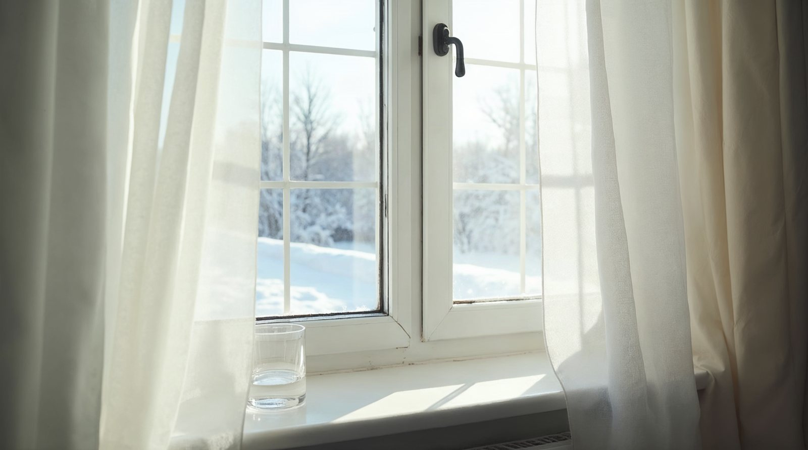
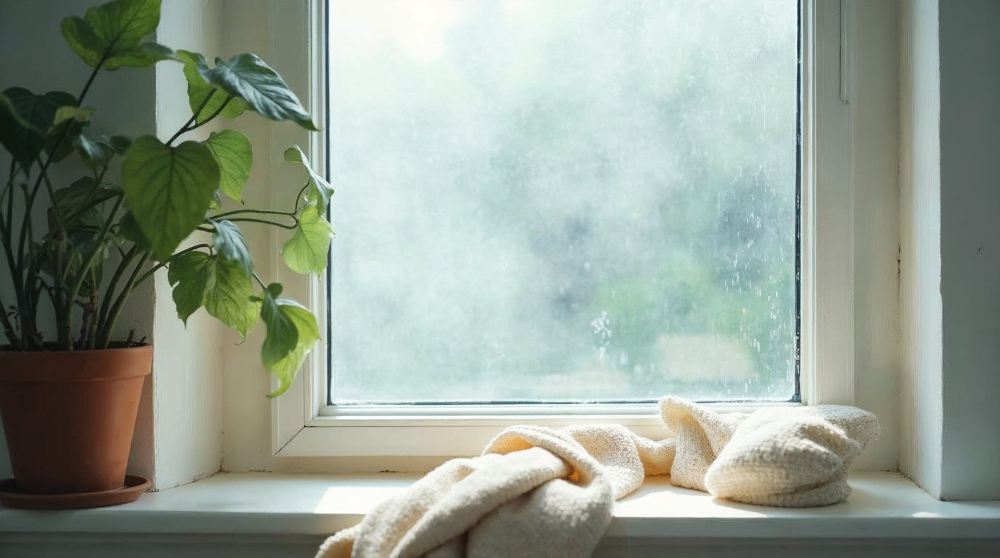
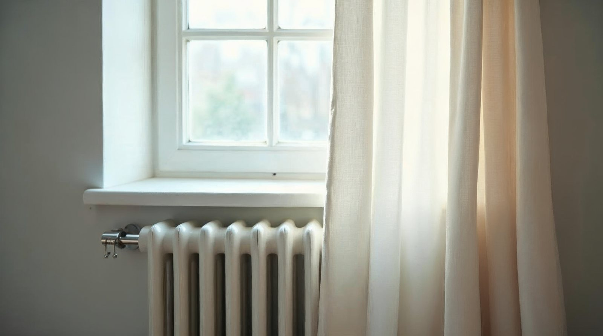
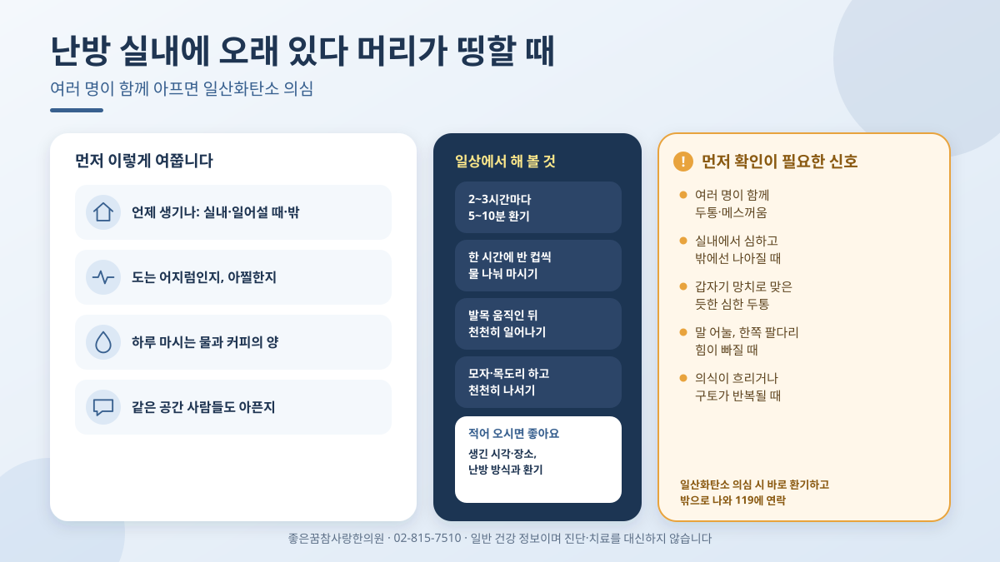

이종호 한의사 감수좋은꿈참사랑한의원 대표원장 (한의사 면허번호 19769)발행 2026-11-27 · 수정 2026-11-27
이 글의 차례
겨울에는 창문을 꼭 닫고 난방을 세게 튼 방이나 사무실, 학원 자습실에서 몇 시간씩 지내는 일이 많죠. 그러다 자리에서 일어나 밖으로 나서는 순간 눈앞이 아찔하거나, 머리가 띵하고 관자놀이가 지끈거리고, 찬바람을 맞자 두통이 더 심해지는 분들이 계세요.
먼저 안심부터 드릴게요. 이런 증상은 대개 몇 가지가 겹쳐서 생기는 거예요. 환기가 안 된 실내의 탁한 공기와 건조함, 물을 덜 마신 것, 오래 앉아 있던 자세, 그리고 따뜻한 곳에서 찬 곳으로 갑자기 옮길 때 혈관과 혈압이 급히 바뀌는 것이요.
그래서 저는 '어디가 아프냐'와 함께 '언제, 어디서 아프냐'를 꼭 봐요. 닫힌 방에서 생기는 두통과 문을 나서는 순간 생기는 두통은 다른 얘기거든요.
먼저 실내를 두세 시간마다 환기하고, 물을 자주 마셔 보세요. 나가기 전에는 천천히 일어나 몸을 움직이고, 모자와 목도리로 머리와 목을 가린 뒤 나서시고요.
다만 같은 공간에 있던 여러 사람이 함께 머리가 아프고 메스껍거나, 실내에 있으면 심해지고 밖에 나오면 덜해지는 일이 반복된다면 일산화탄소일 수 있어요. 이럴 때는 지체하지 말고 창문과 문을 열어 환기하고, 그 공간에서 나와 가까운 응급실로 가세요.
왜 따뜻한 실내에 오래 있다 나오면 머리가 아프고 어지러울까요
- 사람이 많은 방이나 문을 닫은 사무실에서는 숨 쉴 때 나오는 이산화탄소가 쌓여 공기가 탁해집니다. 이산화탄소 농도가 높아지면 머리가 무겁고 졸리며 집중이 떨어지는 느낌이 들 수 있습니다.
- 난방을 세게 하면 실내 습도가 크게 떨어지고, 따뜻한 곳에서는 갈증을 덜 느껴 물을 적게 마시게 됩니다. 몸의 수분이 부족하면 두통과 어지럼이 쉽게 옵니다.
- 따뜻한 곳에서는 피부와 다리의 혈관이 넓어져 있습니다. 이 상태에서 오래 앉아 있다 갑자기 일어나면 피가 다리 쪽으로 몰려 머리로 가는 혈류가 잠깐 줄고, 눈앞이 캄캄하거나 아찔한 기립성 어지럼이 생길 수 있습니다.
- 반대로 찬 바깥에 나가면 혈관이 갑자기 좁아지고 혈압이 오릅니다. 찬바람이 이마와 관자놀이, 뒷목에 바로 닿으면 근육이 움츠러들며 조이는 듯한 두통이 오기도 합니다.
- 몇 시간 동안 고개를 숙이고 모니터나 책을 보면 목과 어깨 근육이 굳어 긴장성 두통이 생기기 쉽고, 건조한 공기에 눈까지 피로해지면 머리가 더 무겁게 느껴집니다.
- 일산화탄소는 색과 냄새가 없는 가스로, 가스보일러 배기통이 빠지거나 막혔을 때, 연탄이나 숯불을 피울 때, 가스·석유 난로를 환기 없이 켤 때, 텐트나 차 안에서 난로를 쓸 때 생길 수 있습니다. 처음에는 두통, 어지럼, 메스꺼움, 졸림처럼 흔한 증상으로 시작해 알아차리기 어렵습니다.
- 한의학에서는 덥고 막힌 공간에 오래 있으면 열이 위로 몰려 머리가 무겁고 띵하다고 보기도 하고, 기혈이 부족한 분은 자세를 갑자기 바꿀 때 머리로 기운이 잘 오르지 못해 어지럽다고 설명하기도 합니다.
먼저 이렇게 여쭙니다
- 두통과 어지럼이 실내에 있을 때 시작되는지, 일어서는 순간인지, 밖에 나간 뒤인지 여쭙니다.
- 어지럼이 빙글빙글 도는지, 눈앞이 캄캄하고 아찔한지, 몸이 붕 뜨는 듯한지 여쭙니다.
- 그 공간의 난방 방식(가스보일러, 난로, 전기 난방 등)과 환기 습관, 함께 있던 사람들의 상태를 여쭙니다.
- 하루에 마시는 물의 양과, 실내에서 몇 시간 동안 앉아 있는지 여쭙니다.
- 아침 식사를 거르는지, 커피를 얼마나 마시는지 여쭙니다.
- 혈압이 높거나 낮다는 말을 들은 적이 있는지, 혈압약이나 다른 약을 복용 중인지 여쭙니다.
- 평소 두통이 잦은 편인지, 잠은 충분한지 여쭙니다.

일상에서 먼저 해 볼 수 있는 것
실내 공기 정리하기
- 두세 시간마다 5~10분씩 창문을 엽니다. 마주 보는 창이나 문을 함께 열면 짧은 시간에도 공기가 잘 바뀝니다.
- 실내 온도는 20~22도, 습도는 40~60%를 목표로 합니다. 난방을 세게 하기보다 옷을 한 겹 더 입는 편이 머리가 덜 무겁습니다.
- 가스보일러를 쓰는 집이라면 겨울이 시작될 때 배기통이 빠지거나 꺾이지 않았는지, 연결 부위가 헐겁지 않은지 살펴보고, 이상이 보이면 가스 공급 업체나 보일러 설치 업체에 점검을 요청합니다.
- 가스나 석유 난로, 연탄, 숯불을 쓰는 공간에는 일산화탄소 경보기를 달아 두면 미리 알아차리는 데 도움이 됩니다. 텐트나 차 안처럼 닫힌 곳에서는 난로를 켜고 자지 않습니다.
앉아 있는 동안
- 한 시간에 한 번은 자리에서 일어나 2~3분 걷거나 창가에서 바깥을 봅니다.
- 물은 목이 마르기 전에 한 시간에 반 컵씩 나눠 마십니다. 책상 위에 물병을 두면 잊지 않기 쉽습니다.
- 모니터는 눈높이에 맞추고, 30분에 한 번은 먼 곳을 20초쯤 바라보며 목을 천천히 좌우로 돌립니다.
일어나서 나가기 전(3분)
- 오래 앉아 있었다면 바로 일어나지 말고 앉은 채로 발목을 위아래로 열 번 움직이고, 종아리에 힘을 주었다 빼기를 몇 번 합니다.
- 책상을 짚고 천천히 일어난 뒤 10초쯤 서 있다가 걷기 시작합니다. 눈앞이 캄캄해지면 바로 다시 앉거나 쪼그려 앉습니다.
- 외투와 목도리, 모자를 실내에서 먼저 갖추고 나섭니다. 이마와 귀, 뒷목을 가리면 찬바람에 머리가 조이는 일을 줄일 수 있습니다.
- 문을 나선 뒤 처음 몇 분은 천천히 걷고, 계단이나 언덕길은 서두르지 않습니다.
하루 리듬
- 아침을 거르지 말고 가볍게라도 먹습니다. 빈속에 따뜻한 실내에 오래 있으면 어지럼이 더 쉽게 올 수 있습니다.
- 커피는 하루 두 잔 안쪽으로 줄이고, 커피를 마신 만큼 물을 함께 마십니다.
- 잠이 부족한 날은 두통과 어지럼이 더 잘 오니, 잠드는 시각을 일정하게 지킵니다.

언제 생기는지로 먼저 나눠 봅니다
- 실내에 오래 있을수록 머리가 무겁고, 밖에 나가 바람을 쐬면 오히려 나아진다면 환기 부족이나 실내 공기 문제를 먼저 생각합니다. 같은 공간의 다른 사람도 비슷하다면 일산화탄소를 의심합니다.
- 일어서는 순간 눈앞이 캄캄하거나 아찔했다가 몇 초에서 1분 안에 가라앉는다면 자세를 바꿀 때 생기는 기립성 어지럼에 가깝습니다.
- 밖으로 나가 찬바람을 맞은 뒤 이마나 관자놀이, 뒷목이 조이듯 아프다면 찬 공기와 근육 긴장의 영향이 큽니다.
- 장소와 상관없이 하루 종일 두통이 이어지거나, 빙글빙글 도는 어지럼이 오래 간다면 다른 원인을 살펴야 합니다.
상황별 예시
- 예를 들어 노량진 학원 자습실에서 창문을 닫고 히터를 켠 채 서너 시간 공부한 수험생이, 쉬는 시간에 일어나 밖으로 나가는 순간 눈앞이 아찔하고 머리가 띵한 경우, 한 시간마다 일어나 잠깐 걷고 물을 마시며, 일어날 때 발목을 먼저 움직이는 것부터 해 봅니다. 자습실 관리자에게 쉬는 시간마다 환기를 부탁하는 것도 방법입니다.
- 예를 들어 문을 닫은 회의실에서 여러 사람이 두 시간 넘게 회의를 한 뒤 머리가 무겁고 하품이 계속 나는 경우, 사람이 많고 환기가 되지 않아 공기가 탁해진 것일 수 있습니다. 회의 중간에 문을 열어 두거나 쉬는 시간을 넣어 봅니다.
- 예를 들어 오래된 집에서 겨울에 가스보일러를 켜고 잔 다음 날, 가족 여러 명이 함께 머리가 아프고 메스꺼우며, 밖에 나가면 나아졌다가 집에 들어오면 다시 심해지는 경우에는 일산화탄소를 의심합니다. 지체하지 말고 창문과 문을 모두 열고 가족과 함께 밖으로 나와 119에 연락한 뒤, 보일러는 점검을 받기 전까지 쓰지 않습니다.
- 예를 들어 혈압약을 드시는 어르신이 따뜻한 거실에서 TV를 오래 보다 일어나 바로 현관을 나서다가 아찔해서 문을 붙잡은 경우, 일어난 뒤 잠시 서 있다가 움직이고, 어지럼이 자주 있다면 처방한 의사와 혈압과 약에 대해 상의합니다.
자주 하는 오해
- 난방이 따뜻할수록 몸에 좋다고 여기기 쉽지만, 너무 덥고 건조한 실내는 오히려 머리를 무겁게 하고 바깥과의 온도 차를 크게 만듭니다.
- 머리가 아프면 일단 진통제부터 찾는 분이 많지만, 환기와 물, 자세만 바꿔도 덜해지는 두통이 있습니다. 진통제를 일주일에 여러 번 먹게 된다면 원인을 살펴보는 것이 먼저입니다.
- 일산화탄소는 냄새로 알 수 있다고 생각하기 쉽지만, 일산화탄소는 색도 냄새도 없습니다. 증상의 흐름과 같은 공간 사람들의 상태로 의심해야 합니다.
- 찬바람을 쐬면 머리가 맑아진다고 겉옷 없이 나가는 분도 있습니다. 잠깐 시원할 수는 있어도 갑자기 찬 공기를 맞으면 두통이 더 심해질 수 있어, 머리와 목을 가린 채 나가는 편이 좋습니다.
- 일어설 때 잠깐 어지러운 것은 누구나 있는 일이라며 넘기기 쉽지만, 자주 반복되거나 쓰러질 듯하다면 혈압과 빈혈 등을 확인해 보는 것이 좋습니다.

스스로 점검해 보세요
- 창문을 닫은 채 난방을 켜고 서너 시간 넘게 머무는 날이 많다.
- 실내에 있으면 머리가 무겁다가 바깥 공기를 쐬면 조금 나아진다.
- 오래 앉아 있다 일어설 때 눈앞이 캄캄하거나 아찔한 일이 일주일에 몇 번 있다.
- 하루에 물을 서너 잔도 마시지 않는다.
- 맨머리로 찬바람을 맞으며 나가면 이마나 관자놀이가 조이듯 아프다.
- 집에서 가스보일러, 난로, 연탄 등을 쓰는데 배기통이나 경보기를 살펴본 적이 없다.
- 같은 공간에 있던 가족이나 동료도 비슷하게 머리가 아프다고 한다.
한의원에서 함께 살필 수 있는 경우
- 실내 환경을 바꿨는데도 일어설 때 어지럼이나 머리가 무거운 느낌이 2주 넘게 이어지는 경우
- 목과 어깨가 굳고 오후만 되면 머리가 조이듯 아픈 일이 잦은 경우
- 손발이 차고 쉽게 피로하며, 자세를 바꿀 때 아찔한 일이 자주 있는 경우
- 겨울만 되면 머리가 무겁고 잠이 얕아지며 컨디션이 떨어지는 경우
좋은꿈참사랑한의원에서는 첫 방문 때 두통과 어지럼이 언제, 어디서, 어떤 모양으로 오는지를 먼저 여쭙고, 생활하는 공간의 난방과 환기, 물과 식사, 잠, 복용 중인 약을 함께 정리합니다. 일산화탄소처럼 공간의 문제가 의심되면 그 확인과 조치를 먼저 안내해 드립니다.
그다음 맥부터 짚어 보고, 혀와 목·어깨의 긴장, 손발의 온기를 살펴 몸이 자세 변화와 온도 차에 얼마나 쉽게 흔들리는지 확인합니다. 그 뒤 실내 환경과 일어나는 습관, 외출 준비를 어떻게 바꿀지 함께 정하고, 필요하면 침이나 추나, 한약을 상의합니다.
갑자기 심해진 두통이나 신경 증상처럼 영상 검사나 신경과 진료가 먼저 필요해 보이면 그렇게 안내해 드립니다. 다음 진료에서는 기록해 오신 두통·어지럼 일지를 이어서 보며 조절 방향을 다듬습니다.
얼마나 지켜보고 언제 상담할까요
- 환기와 물, 일어나는 습관, 외출 준비를 바꾼 뒤 1~2주 동안 두통과 어지럼이 언제 생기는지 기록해 봅니다.
- 일어설 때 잠깐 아찔한 일이 줄어드는지, 실내에서 머리가 무거운 날이 줄어드는지 봅니다.
- 생활을 바꿔도 같은 증상이 이어지거나, 진통제를 일주일에 두세 번 넘게 먹게 된다면 상담을 받아 보세요.
- 일산화탄소가 의심되거나 아래 신호가 있다면 지켜보지 말고 바로 조치합니다.
이렇게 기록해 오시면 상담이 쉬워집니다
- 두통이나 어지럼이 생긴 날짜와 시각, 장소(집, 사무실, 학원 등), 그때 하던 일
- 어지럼의 모양(도는지, 아찔한지)과 얼마나 이어졌는지
- 그 공간의 난방 방식과 환기 여부, 함께 있던 사람들의 상태
- 하루에 마신 물과 커피 양, 식사 여부
- 잠든 시각과 일어난 시각
- 복용 중인 약(특히 혈압약, 진통제)과 먹은 횟수
일지가 몇 장 쌓이면 두통이 공간을 따라오는지, 시간을 따라오는지가 보여요. 그게 보이면 바꿀 것도 훨씬 좁혀지거든요.
치료는 제가 맡을게요. 대신 하나만 부탁드려요. 오래 앉아 있다 나가실 땐 일어서자마자 문을 열지 마시고, 잠깐 서서 숨 한 번 고른 뒤 나가 주세요. 딴 건 편하게 하셔도 돼요.
겨울에 머리가 무거운 건 생각보다 흔한 일이에요. 혼자 참기보다 기록을 들고 오셔서 같이 보세요. 궁금한 건 그냥 편하게 물어보세요.
이런 증상은 먼저 확인이 필요합니다
- 같은 공간에 있던 여러 사람이 함께 두통, 어지럼, 메스꺼움을 느끼거나, 반려동물까지 기운이 없는 경우
- 실내에 있으면 심해지고 밖에 나가면 나아지는 두통이 반복되는 경우
이런 신호가 있으면 한의원보다 가까운 병원이나 응급실을 먼저 찾으세요.
관련 글
- 겨울 사무실 공기가 답답하고 목이 따끔할 때는 환기를 어떻게 하나요?
- 어지럼이 빙빙 도는지, 아찔한지는 어떻게 구분해서 전하나요?
- 겨울에 뜨거운 물로 목욕하고 일어설 때 어지러우면 어떻게 하나요?

여쭙는 것
- 두통과 어지럼이 실내에 있을 때 시작되는지, 일어서는 순간인지, 밖에 나간 뒤인지…
- 어지럼이 빙글빙글 도는지, 눈앞이 캄캄하고 아찔한지, 몸이 붕 뜨는 듯한지 여쭙니다.
- 그 공간의 난방 방식(가스보일러, 난로, 전기 난방 등)과 환기 습관, 함께 있던…
생활에서 해 볼 것
- 두세 시간마다 5~10분씩 창문을 엽니다. 마주 보는 창이나 문을 함께 열면 짧은…
- 실내 온도는 20~22도, 습도는 40~60%를 목표로 합니다. 난방을 세게 하기보…
- 가스보일러를 쓰는 집이라면 겨울이 시작될 때 배기통이 빠지거나 꺾이지 않았는지, 연…
한의원에서 함께 살필 것
- 실내 환경을 바꿨는데도 일어설 때 어지럼이나 머리가 무거운 느낌이 2주 넘게 이어지…
- 목과 어깨가 굳고 오후만 되면 머리가 조이듯 아픈 일이 잦은 경우
- 손발이 차고 쉽게 피로하며, 자세를 바꿀 때 아찔한 일이 자주 있는 경우
먼저 확인이 필요한 신호
- 같은 공간에 있던 여러 사람이 함께 두통, 어지럼, 메스꺼움을 느끼거나, 반려동물까…
- 실내에 있으면 심해지고 밖에 나가면 나아지는 두통이 반복되는 경우
한눈에 보는 표
| 구분 | 핵심 |
|---|---|
| 여쭙는 것 | 두통과 어지럼이 실내에 있을 때 시작되는지, 일어서는 순간인지, 밖에 나간 뒤인지 여쭙니다. 어지럼이 빙글빙글 도는지, 눈앞이 캄캄하고 아찔한지, 몸이 붕 뜨는 듯한지 여쭙니다. |
| 생활에서 해 볼 것 | 두세 시간마다 5~10분씩 창문을 엽니다. 마주 보는 창이나 문을 함께 열면 짧은 시간에도 공기가 잘 바뀝니다. 실내 온도는 20~22도, 습도는 40~60%를 목표로 합니다. 난방을 세게 하기보다 옷을 한 겹 더 입는 편이 머리가 덜 무겁습니다. |
| 한의원에서 함께 살필 것 | 실내 환경을 바꿨는데도 일어설 때 어지럼이나 머리가 무거운 느낌이 2주 넘게 이어지는 경우 목과 어깨가 굳고 오후만 되면 머리가 조이듯 아픈 일이 잦은 경우 |
| 먼저 확인이 필요한 신호 | 같은 공간에 있던 여러 사람이 함께 두통, 어지럼, 메스꺼움을 느끼거나, 반려동물까지 기운이 없는 경우 실내에 있으면 심해지고 밖에 나가면 나아지는 두통이 반복되는 경우 |
자주 묻는 질문
따뜻한 방에 있다 나올 때 어지러운 건 왜 그런가요?
따뜻한 곳에서는 다리와 피부의 혈관이 넓어져 있어, 오래 앉아 있다 갑자기 일어나면 머리로 가는 피가 잠깐 줄어 아찔할 수 있습니다. 천천히 일어나 잠시 서 있다가 움직이고, 물을 자주 마셔 보세요.
일산화탄소 중독은 어떻게 의심하나요?
같은 공간에 있던 여러 사람이 함께 머리가 아프고 메스껍거나, 실내에서는 심해지고 밖에 나가면 나아지는 흐름이 반복되면 의심합니다. 이럴 때는 바로 환기하고 밖으로 나와 가까운 응급실로 가세요.
환기는 얼마나 자주 하면 좋을까요?
두세 시간마다 5~10분씩, 가능하면 마주 보는 창이나 문을 함께 열어 공기가 빠르게 바뀌도록 합니다. 사람이 많은 공간이라면 더 자주 여는 것이 좋습니다.
일어설 때 어지러운 것은 병원에 가야 하나요?
잠깐 아찔했다가 바로 가라앉는 정도라면 생활 습관부터 바꿔 볼 수 있습니다. 다만 자주 반복되거나 실제로 넘어지고, 가슴 두근거림이나 숨참이 함께 있다면 혈압과 빈혈 등을 확인하는 진료를 받으세요.
한의원에서는 이런 두통과 어지럼을 어떻게 살피나요?
증상이 생기는 장소와 순간, 생활 공간의 환경을 먼저 여쭙고 맥부터 짚어 봅니다. 목과 어깨의 긴장, 손발의 온기, 잠과 식사를 함께 살핀 뒤 생활 조절과 필요한 진료를 상의합니다.
좋은꿈참사랑한의원은 재진 때 지난번 이야기부터 이어서 여쭙니다. 진료시간과 예약은 오시는 길에서 확인하세요.
어디서 상담받을 수 있나요?
좋은꿈참사랑한의원은 서울 동작구 만양로2길 2 신성빌딩 3층·5층(서울 동작구 상도동, 7호선 상도역 3번 출구 근처)에 있습니다. 한의사 3명(이종호 대표원장, 조영기 수석진료원장, 정원영 진료원장)이 진료합니다. 진료시간은 평일 09:30~20:00(점심 13:00~14:00), 토·일·공휴일 09:30~15:00이며, 방문 전 전화로 확인을 권합니다. 예약은 네이버 예약, 카카오톡 상담, 전화 02-815-7510로 받습니다.
이 글은 일반적인 건강 정보이며 개인의 진단이나 치료를 대신하지 않습니다. 증상이 있거나 복용 중인 약이 있다면 진료를 통해 확인하세요. 치료 효과는 개인마다 다를 수 있습니다.
작성 기준: 일반적으로 알려져 있는 건강 정보를 참고해 정리했습니다(대표원장 감수). 증상 기록은 1~2주 동안 하루 1회, 비슷한 시간에 적어 오시면 지난 상태와 비교하기 쉽습니다.